O PontoCerto registra suas marcações no dia a dia e, no fim do mês, preenche o Relatório de Justificativa de Ponto e a Carta de Compensação de Horas para você — direto do celular ou do computador.
Todo mês a mesma rotina: lembrar o que aconteceu em cada dia, preencher o PDF de justificativas e montar a carta de compensação. O PontoCerto guarda essas informações enquanto o mês acontece.
Entrada e saída com data e hora automáticas, com categoria e observação para lembrar o motivo depois.
Envie o Relatório de Justificativa de Ponto e as justificativas registradas entram sozinhas no campo Motivo.
A planilha modelo do RH é preenchida com os dias a débito, seu nome e seu registro.
Saldo, evolução, maiores créditos e débitos e resumo por mês, alinhados ao saldo do RHevolution.
As etapas 1 a 3 são feitas uma única vez. Depois, é só registrar o ponto no dia a dia e fechar o mês.
Abra o link no navegador do celular ou do computador. Crie a conta com e-mail e senha ou entre direto com sua conta Google. Depois de entrar, o menu principal mostra seu nome, a hora atual e o acesso a todas as funções.
Dica: no celular, use “Adicionar à tela inicial” para abrir o PontoCerto como um aplicativo.
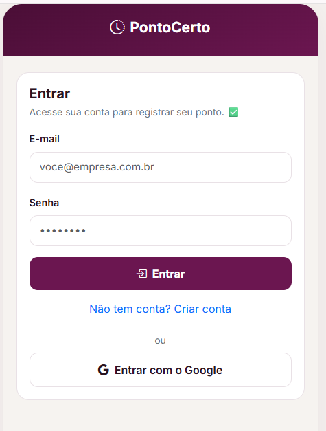
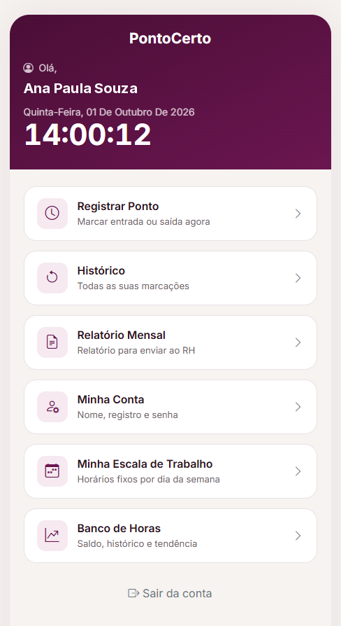
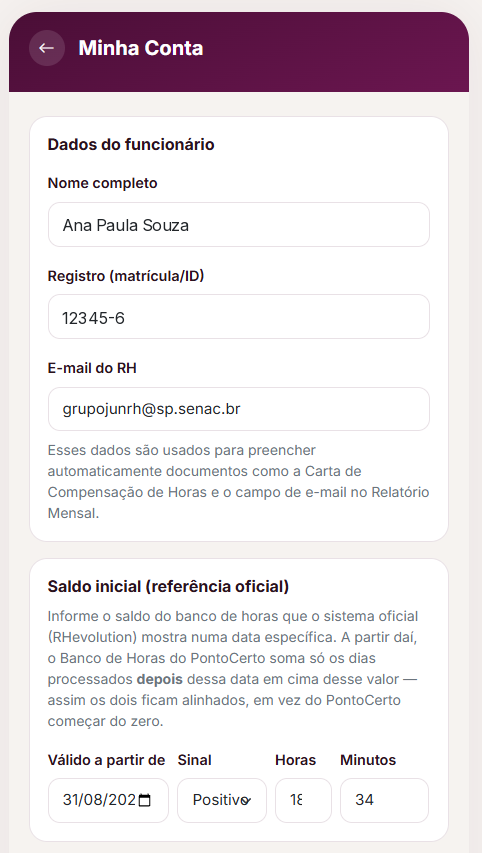
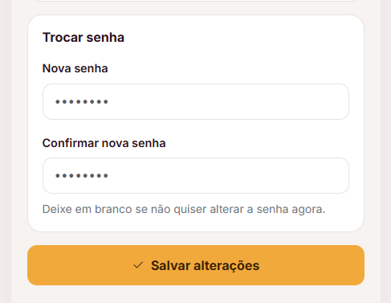
Nome, registro e e-mail do RH são usados para preencher automaticamente a Carta de Compensação e o envio do Relatório Mensal.
No Saldo inicial, informe o saldo que o RHevolution mostra numa data. A partir dela, o PontoCerto soma só os dias seguintes — assim os dois sistemas ficam alinhados.
Na mesma tela você pode trocar sua senha. Ao terminar, toque em Salvar alterações.
Para cada dia da semana, marque Normal, Compensado ou Folga/DSR e informe entrada, saída e retorno do intervalo e saída final, conforme seu contrato.
É ela que permite ao PontoCerto completar o intervalo nos dias marcados como “Ímpar” no PDF do RH — quando alguma batida foi esquecida.
Dias sem expediente, como sábado e domingo, podem ficar em branco. No final, toque em Salvar escala.
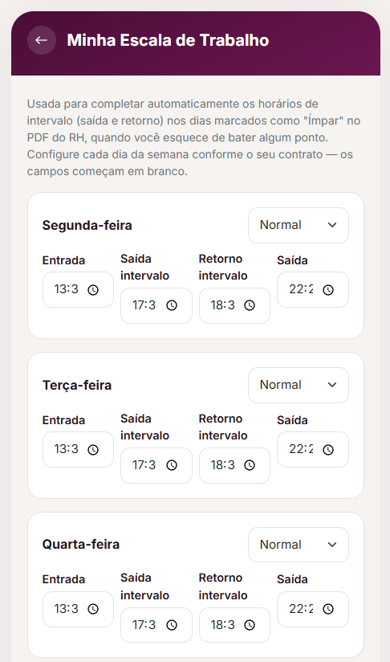
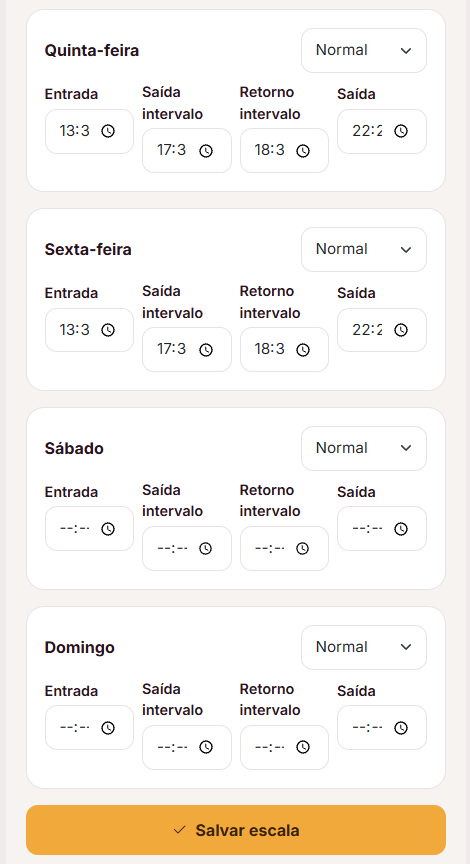
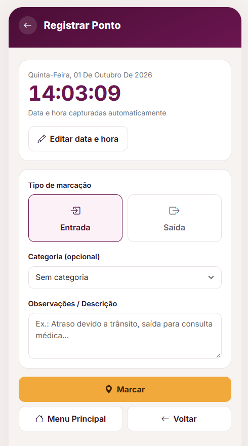
Escolha Entrada ou Saída e toque em Marcar. Quando algo foge do normal, use a categoria — entrada antecipada, saída antecipada, atraso ou outro — e escreva o motivo.
Esse motivo é o que vai aparecer automaticamente no relatório do RH no fim do mês. Esqueceu de marcar? Use Editar data e hora antes de tocar em Marcar. O Histórico mostra tudo em lista ou calendário.
Envie o PDF “Relatório de Justificativa de Ponto” que o RH manda. O PontoCerto preenche o campo Motivo nos dias que pedem justificativa e reconstrói a sequência completa nos dias “Ímpar”.
Em seguida, gere a Carta de Compensação a partir da planilha modelo do RH, use Exportar PDF se quiser o relatório do PontoCerto e envie os arquivos. No celular, o compartilhamento já abre com os anexos; no computador, os arquivos são baixados para você anexar ao e-mail.
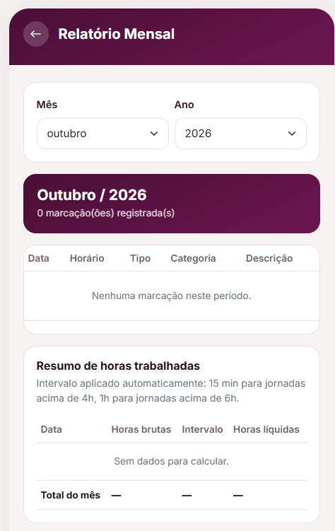
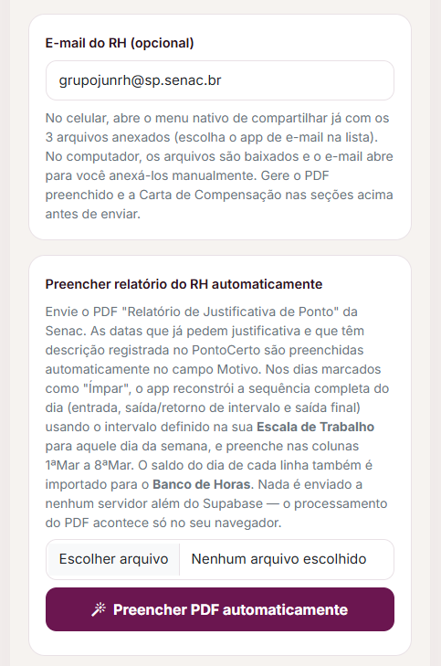
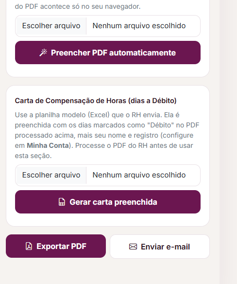
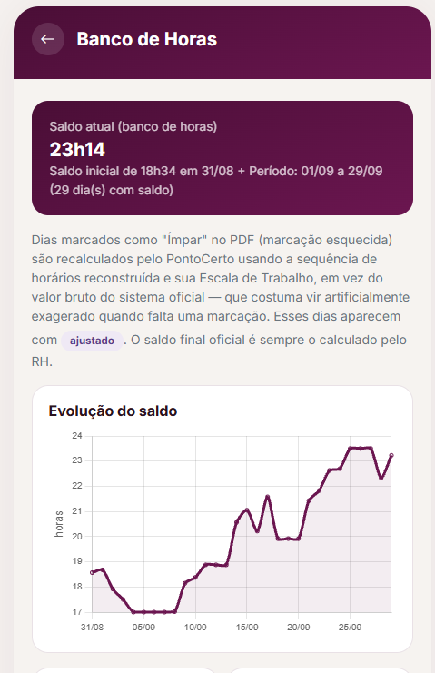
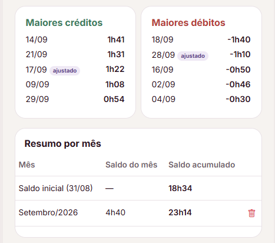
Cada PDF processado alimenta o Banco de Horas com o saldo de cada dia: evolução, maiores créditos e débitos e resumo mês a mês.
Dias “Ímpar” são recalculados com sua escala e aparecem como ajustado. Importante: o saldo final oficial é sempre o calculado pelo RH.
Crie sua conta, preencha Minha Conta e a Escala, e registre seu primeiro ponto.
ponto-certo-snowy.vercel.appDúvidas e sugestões: [seu contato]